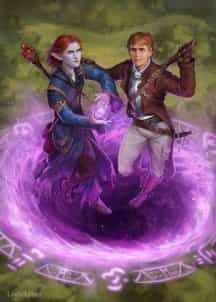

- 5 уровень, вызов
- Время накладывания: 1 минута
- Дистанция: 10 футов
- Компоненты: В, М (редкие мелки и чернила с основой из драгоценных камней стоимостью 50 зм, расходуемые заклинанием)
- Длительность: 1 раунд
- Классы: бард, волшебник, колдунTCE, чародей
- Подклассы: домен магии (жрец), странник горизонта (следопыт)
В процессе накладывания заклинания вы рисуете на полу круг диаметром 10 футов, исписанный знаками, связывающими ваше местоположение с постоянным кругом телепортации на ваш выбор, чью последовательность знаков вы знаете, и находящимся на том же плане существования, что и вы. В нарисованном круге появляется мерцающий портал, остающийся открытым до конца вашего следующего хода. Все существа, входящие в портал, мгновенно появляются в пределах 5 футов от места назначения или в ближайшем свободном пространстве, если то место занято.
Во многих основных храмах, гильдиях и прочих важных местах есть постоянные круги телепортации, начертанные где-то на их территории. У каждого такого круга есть уникальная последовательность знаков — серия рун, начертанных в определённом узоре. Когда вы впервые получаете возможность накладывать это заклинание, вы изучаете последовательность знаков двух местонахождений на Материальном плане, выбранных Мастером. Вы можете узнать дополнительные последовательности знаков во время приключений. Вы можете запомнить новую последовательность, изучая её 1 минуту.
Вы можете создать постоянный круг телепортации, накладывая это заклинание в одном и том же месте каждый день в течение одного года. При этом вы не обязаны тут же использовать свежесозданный круг.
Путешествие в другие миры (TASHA'S CAULDRON OF EVERYTHING)
Материальный план содержит в себе бесконечное число миров. Некоторые из них — такие как Орт, Торил, Кринн и Эберрон — подробно описаны, но есть бесчисленное множество других. Вы и ваши друзья, возможно, даже сами создали несколько своих D&D миров!
Так было не всегда. Различные ученые рассказывают о зачаточном состоянии, единой реальности, называемой Первым Миром, которая предшествовало мультивселенной, какой мы её знаем. Многие народы и чудовища, населяющие миры на Материальном плане, произошли оттуда. После того, как Первый Мир был расколот великим катаклизмом, что породило следующие за ним миры, потомство первых эльфов, дварфов, бехолдеров и других знаковых существ пустило корни в этих мирах, словно семена, рассеянные космическим ветром. Если рассуждения этих великих мудрецов верны, то каждый мир является отражением, а в некоторых случаях искажением Первого Мира.
Перемещения между этими мирами редки, но возможны и могут быть осуществлены различными способами. Один из таких методов называется «великим путешествием», эпическим приключением, полным опасностей и трудностей, которые необходимо преодолеть. Это путешествие чаще всего проходит на борту судна, управляемого магией.
Другой метод — это «сон о других мирах». Путешественники впадают в глубокий сон и видят себя в новой реальности. Заклинание сон синей вуали [dream of the blue veil] использует этот метод перехода.
Самый прямой метод — это «прыжок в другую реальность». Заклинатель накладывает заклинание круг телепортации [teleportation circle] или телепортация [teleport], стремясь появиться в известном ему телепортационном круге или в другом месте в ином мире.
Какой бы метод вы ни выбрали, Мастер определяет, преуспеете ли вы и где именно появитесь, если у вас получится переместиться.
Круг телепортации — Заклинания
Круг телепортации [Teleportation circle]PH14 PH24
Галерея

Комментарии
И.. я правильно понимаю, что портал односторонний? То есть, чтоб между двумя местами было сообщение нужно иметь как минимум три портала (изначальный постоянный портал, портал с нужной точки и портал возле изначального обратно на точку).
Если это так, можно сделать:
Телепортационный кольцевой поезд, где Вы выходите из портала и входите обратно, если это не ваша остановка. И так повторяете до конечной, где будут два портала и придётся немного пройти дабы начать заново.
Или Телепортационный хаб, где будет один центральный изначальный портал, к которому будет привязаны все остальные вне хаба, и целое поле ведущих обратно к порталам из вне.
Можно вообще смешать, целая куча кольцевых систем, а их конечные будут на хабе.
Правда.. стоить это будет очень очень очень дорого - один портал будет стоить 18 250 золотых...
Например в Бааторе полно порталов, там есть целый город порталов. Что как бы намекает об их экономической деятельности.
К примеру разместить в мастерской, лабе, доме или еще где-т ? И оттуда уже переместиться к примеру на любой другой план с аналогичным ковром ?
Из твитов Кроуфорда или Советов Мудреца:
Для заклинания телепортации требуется пункт назначения. Природа этого места не уточняется. Например, это может быть палуба движущегося корабля.
Точно так же важна поверхность круга, а не его точка в пространстве. Таким образом, поверхность может двигаться во время выполнения заклинания телепортационного круга каждый день в течение года, а также после того, как оно станет постоянным. Нет никаких ограничений, запрещающих постоянному символу двигаться:
Когда вы накладываете заклинание «Круг телепортации», вы создаёте круг на земле. Круг привязан к этой поверхности, а не к точке в пространстве.
Что произойдёт, если я наложу заклинание на транспортное средство на год (и оно будет неподвижно), а затем транспортное средство начнёт двигаться? Можно ли будет по-прежнему использовать его в качестве пункта назначения?
Да, целью является символ, а не точка в пространстве, в которой было произнесено заклинание.
Могу ли я создать постоянную учётную запись для транспортного средства, если оно никогда не находится в одном и том же месте дважды?
ДА
Когда вы изучаете это заклинание, вы также изучаете последовательность символов, допустим вы знаете что во Вратах Балдура есть круг ААА123, а в Невервинтере БББ345
Вы чертите свой круг (без номера), в котором вы можете указать ААА123 как точку назначения, он перенесёт вас во Врата Балдура
Если вы год рисуете круг на одном и том же месте, неважно с какой точкой назначения (ААА123, или БББ345, или ВВВ789, какой угодно) у вас появляется возможность присвоить последовательность символов этому кругу, как бы закрепив его якорем в пространстве. Скорее всего если присвоить такую же последовательность символов, возникнет ошибка уникальных имён и заклинание провалится, так что нужно задать собственную последовательность.
Новый круг не связан с каким-либо другим кругом, это не зависит от того куда вы делали назначение, но он теперь сам может быть назначением
Но это не так важно - у вас есть круг у змеи и у вас, оба постоянные. При активации заклинания вы перемещаетесь к постоянному кругу. Т.е. змея точно никуда не переместится. Разве. что сама змея скастует заклинание, но это прям какая-то очень уникальная змея.
"Самый прямой метод — это «прыжок в другую реальность»"
Другая реальность и "стремясь появиться в известном ему телепортационном круге или в другом месте в ином мире" подходят под определение сна как иной реальности или иного мира
Внутри сна можно ежедневно в течение года в чертогах своего разума чертить постоянный круг телепортации. Год и даже тысячелетия внутри сна протекают также хаотично быстро или медленно как при переходе в План Фей и обратно
Затем оттуда вернуться к себе в реальность. По сути сон схож с деми планом, с которыми удобнее связывать через телепортацию и постоянные круги
.......Я даже задумался, не рофл ли это.
Нет, чисто технически у ДМа в сеттинге может быть такой эфемерный «мир снов», но мне кажется, на полном серьёзе пытаться телепортироваться в сон ПОРТАЛОМ, когда в сеттинге ДМа про такое не указано, это просто-напросто бредятина.
1. Это может помочь вашим преследователям, определить место куда вы направились. Если они знают рисунок постоянного круга телепортации выходной точки?
2. Это даст вашим преследователям, возможность прыгнуть за вами, если они не знают рисунок точки выхода, но имеют заклинателя с подготовленным заклинание и компоненты? Круг то по факту уже начерчен.
1. Использование круга телепортации не даёт никому знания о том, куда вы телепортировались.
2. Не даст. Чтобы знать, как телепортироваться в нужный круг телепортации, нужно изучать именно точку прибытия, а не отправления. И изучение тратит 1 минуту, в то время как портал - как и нарисованный для него круг, существуют только 1 раунд.
получается ли так, что портал может оказаться гипотетически растягиваемым, чтобы существо большего размера, чем описанный на полу круг, могло пройти через него? Описано так, что все существа (вне зависимости от размера) могут пройти через портал.